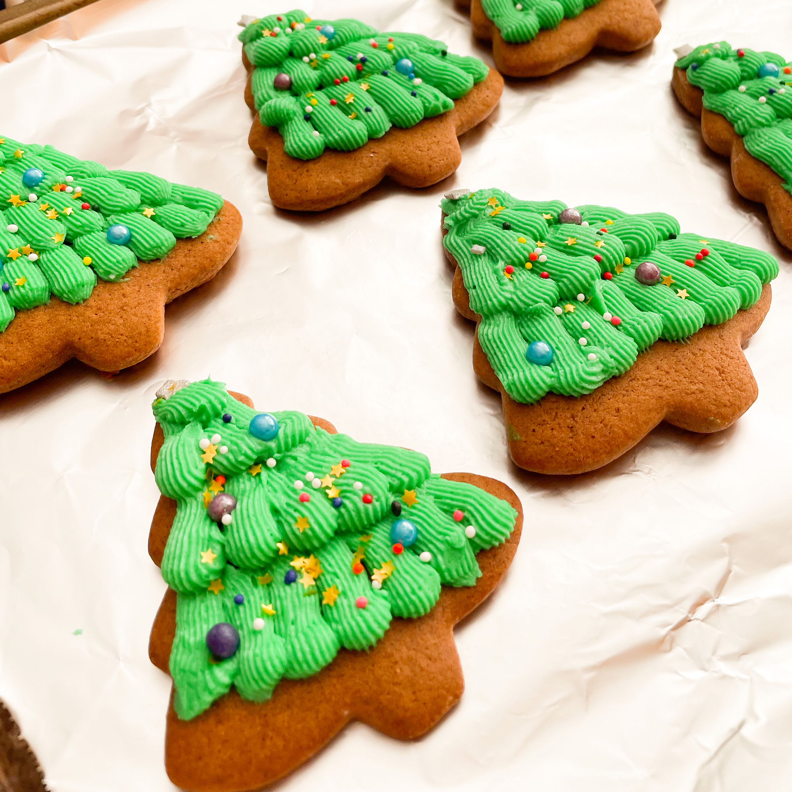

Sugar Cookie Frosting

Description
Add food coloring to decorate your favorite sugar cookies.
Ingredients
- 4 cups confectioners' sugar
- ½ cup shortening
- 5 tablespoons milk
- 1 teaspoon vanilla extract
- food coloring (Optional)
Directions
- In a large bowl, cream together the confectioners' sugar and shortening until smooth. Gradually mix in the milk and vanilla with an electric mixer until smooth and stiff, about 5 minutes. Color with food coloring if desired.